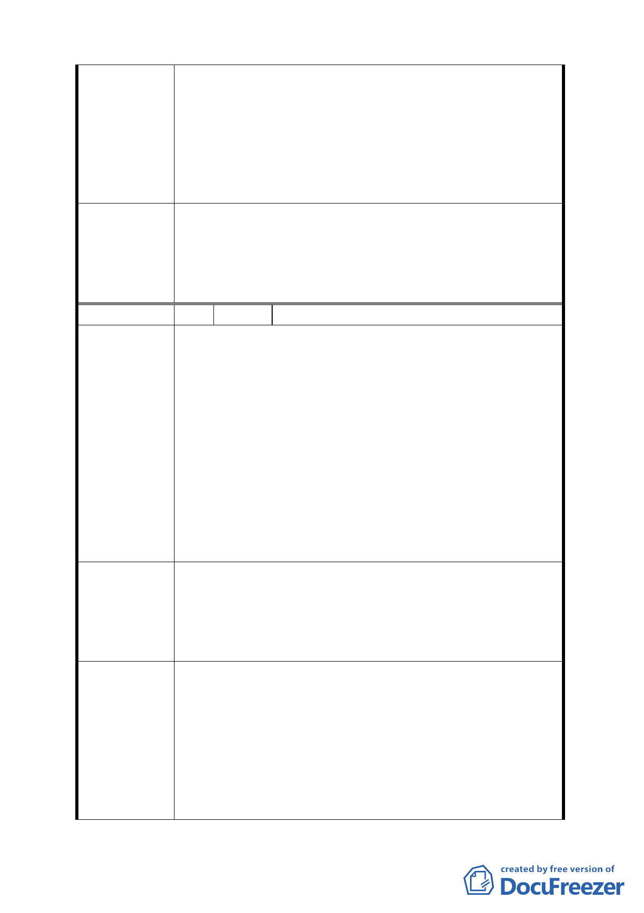

區（二））、辦公服務區（本計畫區辦公服務區（一））、
工商混合區、工商服務展售區，除容許使用項目及其
他相關規定外，本計畫未規定部分，依土地使用分區
管制規則第一種商業區規定辦理。
二、 目前該地區範圍已有多筆土地刻正申辦或已完成都
市設計審議程序，應無上開土地使用產生疑義之問
題。
為利計畫執行一致性，有關「內湖區新里族段羊稠小段附
近地區都市計畫案（五期重劃區）」增列「辦公服務區
委員會決議 （一）」、「辦公服務區（二）」、「工商混合區」及「工商服
務展售區」適用綜合設計放寬容積獎勵及應辦理回饋之相
關規定；餘依市府（發展局）回應內容辦理。
編 號 2 陳情人 邱明宏
一、 本基地依規定之使用管制上限建蔽率 50%、容積率
225%，未規定者則依本市土地使用分區管制規則第一
種商業區規定辦理。
二、 本基地依都市計畫說明書規定需留設 5 公尺帶狀公
共開放空間及留設 500 平方公尺以上之廣場型開放
陳情理由
空間供公眾使用，留設之供公共使用開放空間因容積
上限規定無任何獎勵值，然留設之開放空間仍須負擔
設計規劃施工及日後維護成本。
三、 本計畫區緊臨「基隆河（中山橋至成美橋段）附近地
區」，該計劃區依規定提供公共開放空間者，容積率
及高度皆得以放寬，本計劃區性質及區位與其一致，
卻限制容積上限值，有損所有權人之權益。
建請本區比照「基隆河（中山橋至成美橋段）附近地區都
市計畫」及「臺北市土地使用分區管制規則」之綜合設計
建 議 辦 法 放寬及容積獎勵規定，訂定採綜合設計留設公共空間者酌
予放寬容積及高度限制以符合公平原則並提高開發意願，
鼓勵公共開放空間之留設創造本區位優質之都市環境。
一、旨揭陳情地點，應係指內湖區新里族段羊稠小段地區
（內湖第五期重劃區），經查該地區之規劃原意，係
為建構多功能工商服務之特定專用區，其容許使用項
目包括倉儲、批發、物流運輸、製造業、策略性產業、
發展局回應
會展產業及辦公服務等，經查與「基隆河（中山橋至
成美橋段）附近地區都市計畫」適用綜合設計放寬規
定之「商業區」及「娛樂區」發展性質並不相同。
二、本計畫區內「辦公服務區（一）（原辦公服務區）」、「辦
5